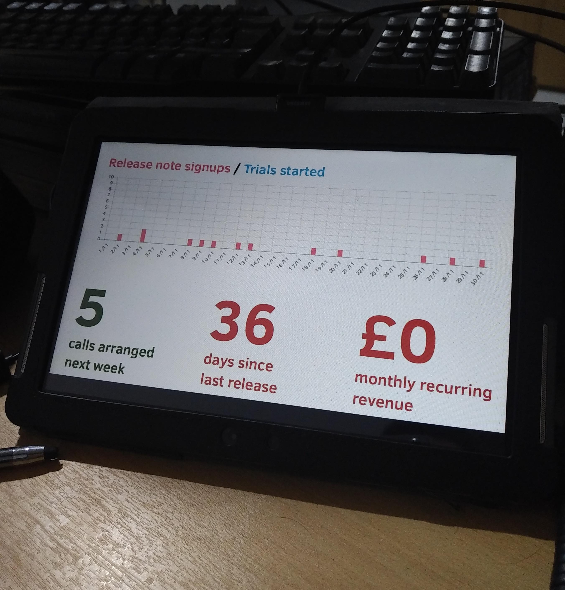

30 November 2018
Protecting liberty by simplifying security
Recap: We're building Fluidkeys to make it easy for teams to implement great security across their organisations. We’ve built a command line app that helps you make strong PGP keys and automatically rotate them.
Paul’s back from his holiday, but I’ve not managed to stop him coding for long enough to write these. Sorry, me again.
This week we spent two days designing and building a dashboard that we now proudly display on our desks in our respective cities. Here’s Paul’s in Liverpool:

The theory is that by tracking some key numbers, we’ll improve! Firstly, we’re measuring the number of people signing up to our release notes, hopefully by looking at this every day we’ll then start to prioritise work to increase it. Currently it’s one every few days, most of this coming from Expirybot. Next, we want to speak to at least 4 people every week, so next week’s looking good! We want to do a minor release every 30 days, so not so great there. And then ultimately we’re trying to make a living out of this. As you can see, there’s still some room for improvement.
If week notes aren’t regular enough for you, now you can follow along with our progress in realtime: https://fluidkeys-dashboard.herokuapp.com!
Today was a productive day…
While we’ve been thinking about how people using Fluidkeys invite others to join their team, and get keys synced and up to date, it isn’t feeling like this proposition is valuable enough in and of itself.
We revisited our notes from our research and pulled out some of the pains they’re feeling:
I hate to think how much [sensitive information] stuff gets sent around Slack!
We use a shared services@[…] google inbox/group to manage access to AWS, it works, but it’s a pain to setup and… it’s Google!
It’s hard getting new developers to setup PGP to receive login credentials
We’ve decided to address these next. With Fluidkeys you can send secret snippets to your team-mates. They'll be end-to-end encrypted, so safe from any prying eyes and data-breaches.
Some of the things we’ve heard people are nervous pinging around are:
Our MVP will focus on letting you send small snippets:
➜ fk secret send ian@fluidkeys.com [type or paste your message, ending by typing Ctrl-D] SECRET_ACCESS_TOKEN="7d10c9b8-f48e-11e8-9b90-a74f356d2ad5" ▸ Searching for a public key for ian@fluidkeys.com... [found] ▸ Successfully sent secret to ian@fluidkeys.com ➜
As you can see, we’ve five calls lined up next week with people either using PGP in their organisations or interested in it. Again we’re going to use those calls to try to understand what sorts of pains they’re feeling and what how their organisations are structured before trying to see if what we’re building might be useful.
Tune in next week! — Ian
All feedback is welcome, pop us an email to hello@fluidkeys.com*
*bonus points if it comes encrypted